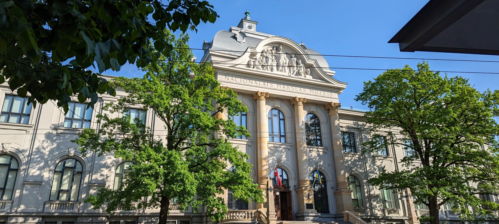

Tīmekļa vietne ir paredzēta, lai apskatītu dažādus veidus kā es, Kristaps Langmanis, ceļoju vai varētu ceļot no mājām līdz Latvijas Universitātei. Sadaļas ir iedalītas pēc transportu veida:
- Velosipēdu: pavasarī un vasarā man patīk braukt ar velosipēdu, jo tas ne tikai piedāvā ērtu un videi draudzīgu veidu, kā pārvietoties, bet arī ļauj baudīt apkārtni un pieredzēt aktīvāku dzīvesveidu.
- Sabiedrisko transportu: mans parasti izmantotais transporta veids, kad man ir jānonāk kādā konkrētā vietā, jo Latvijā tas ir diezgan uzticams un laicīgi sasniedz galamērķi.
- Ar kājām: īsākiem attālumiem man patīk ceļot ar ātru pastaigu, jo tas ļauj man viegli izkustēties un baudīt apkārtni līdzīgi kā braucot ar velosipēdu.
Diemžēl es vēl neesmu pilnībā izstaigājis ceļu no mājām līdz Latvijas Universitātei, bet regulāri staigāju no manas darba vietas Elizabetes ielā līdz Latvijas Universitātes ēkai Raiņa bulvārī 19 un Vēstures un Filozofijas fakultātes ēkai Aspazijas bulvārī 5.
Zem šī teksta, jūs varat apskatīt Latvijas Nacionālā mākslas muzeja attēlu. Bieži man sanāk staigāt no Latvijas Universitātes līdz darba vietai un atpakaļ, līdz ar to arī paeju muzejam garām. Kad gaidu sabiedrisko transportu vai braucu garām ēkai, izmantojot velosipēdu, man patīk daudz un dikti apskatīt to.
